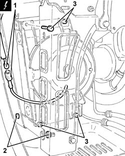
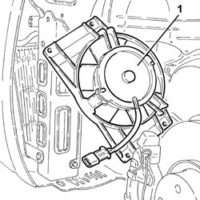

2130A20 automatic transmission fluid cooling fan - r r
- Path
- Procedures > 21 GEARBOX > 2130 AUTOMATIC TRANSMISSION AND DIFFERENTIAL > 2130A automatic transmission assembly > 2130A20 automatic transmission fluid cooling fan - r r
- Kind
- repair procedure (removal / refitting; the operation number is the code)
- Applies to
- engines: 2.5 V6; all production periods
- Interactive page
- https://sloeber94.github.io/elrnDB-a156/en/#/3237986
Applies to: engines: 2.5 V6; all production periods; only with equipment: Q-System
 Removing
Removing
 Refitting
RefittingPosition the vehicle on the ramp.
Ensure that the ignition key is in the OFF position, then disconnect the negative (-) battery terminal.
 | Name | Connector |
|---|---|---|
- | Battery |
4450B10 Front WHEEL (one) - R.R.
7055B64 Engine compartment DUST shield in front wheel arch (one), left or right - R.R.
7055B42 Additional FRONT WHEEL ARCH (one), left or right - R.R.
1. Disconnect the electrical connection for the automatic transmission fluid fan.
| Name | Connector |
|---|---|---|
1 | Automatic transmission fluid fan |
2. Loosen the nuts securing the radiator bracket.
3. Undo the bolts securing the automatic transmission fluid fan.

Applies to: engines: 2.5 V6; all production periods; only with equipment: Q-System
1. Remove the automatic transmission fluid fan withdrawing it sideways.

Applies to: engines: 2.5 V6; all production periods; only with equipment: Q-System
Refitting
RemovingPlace the automatic transmission fluid fan back in its seat then secure with the bolts.
Tighten the radiator bracket securing nuts.
Connect the automatic transmission fluid fan electrical connection.
7055B42 Additional FRONT WHEEL ARCH (one), left or right - R.R.
7055B64 Engine compartment DUST shield in front wheel arch (one), left or right - R.R.
4450B10 Front WHEEL (one) - R.R.
Connect the negative (-) battery terminal.
Remove the vehicle from the ramp.
Topics linked from this page (5)
- 4450B10 Front WHEEL (one) - R.R.
- 7055B42 Additional FRONT WHEEL ARCH (one), left or right - R.R.
- 7055B64 Engine compartment DUST shield in front wheel arch (one), left or right - R.R.
- A1B Battery ( BATTERY NEGATIVE )
- N49 Automatic transmission fluid fan